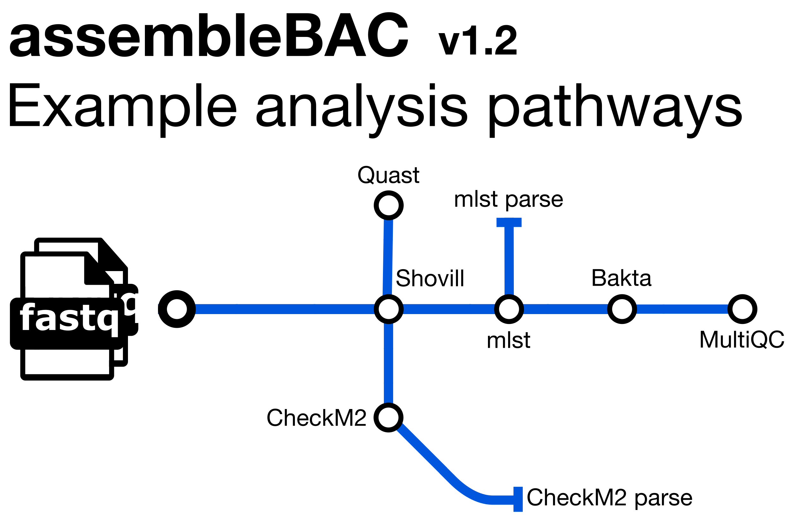

22 The assembleBAC pipeline
- Describe what the
assembleBACpipeline does. - Run a de novo assembly workflow from raw sequencing data.
22.1 Pipeline Overview

assembleBAC is a bioinformatics analysis pipeline written in Nextflow for assembling and annotating bacterial genomes. It also predicts the Sequence Type (ST) and provides QC metrics with Quast and CheckM2. It runs the following tools:
Shovill- de novo genome assemblymlst- Sequence Type assignmentBakta- annotationQuast- assembly metricsCheckM2- assembly completenessMultiQC- assembly metrics summary and pipeline information
See Course Software for a more detailed description of each tool.
Along with the outputs produced by the above tools, the pipeline produces the following summaries containing results for all samples run through the pipeline (found in the metadata directory):
checkm2_summary.tsv- final summary of CheckM2 statistics for input files in TSV formattransposed_report.tsv- final summary of Quast summary statistics for input files in TSV formatMLST_summary.tsv- final summary of Sequence Type assignments in TSV format
22.2 Prepare a samplesheet
As with bacQC and bactmap, we need to prepare a CSV file containing the information about our sequencing files, which will be used as an input to the assembleBAC pipeline. Refer back to the bacQC pipeline page for how to do this.
22.3 Running assembleBAC
Now that we have the samplesheet, we can run the assembleBAC pipeline. There are many options that can be used to customise the pipeline, but a typical command is shown below:
nextflow run avantonder/assembleBAC \
-r "v2.0.2" \
-profile singularity \
--input SAMPLESHEET \
--outdir results/assemblebac \
--baktadb databases/bakta_light_20240119 \
--genome_size GENOME_SIZE \
--checkm2db databases/checkme2/uniref100.KO.1.dmnd-r- tells Nextflow to pull the main version ofassembleBACfrom Github-profile singularity- indicates we want to use the Singularity program to manage all the software required by the pipeline (another option is to usedocker). See Data & Setup for details about their installation.--input- the samplesheet with the input files, as explained above.--outdir- the output directory for the results.--baktadb- the path to the directory containing theBaktadatabase files.--genome_size- estimated size of the genome -Shovilluses this value to calculate the genome coverage.--checkm2db- the path to the diamond file required byCheckM2.
Remember, the first step of any analysis of a new sequence dataset is to perform Quality Control. For the purposes of time, we’ve run bacQC for you and the results are in preprocessed/bacqc. Before you run assembleBAC, have a look at the read stats and species composition TSV files and make sure that the data looks good before we go ahead and assemble it.
22.4 Summary
- The
assembleBACworkflow performs de novo assembly of bacterial genomes. - In addition, it also:
- Annotates the assembly.
- Performs sequence typing (using PubMLST schemes).
- Determines assembly completeness.
- Collects several quality statistics into a report.
- Running the
assembleBACworkflow requires:- A samplesheet detailing the sample names and their respective FASTQ files.
- Directories to databases used for gene annotation (for Bakta) and genome completeness (for CheckM2).
- An approximate genome size.